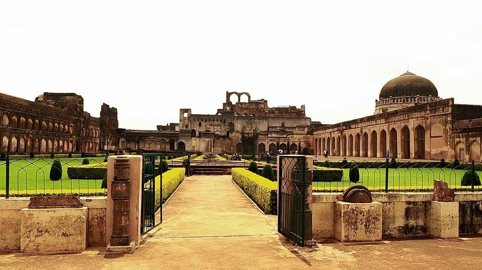
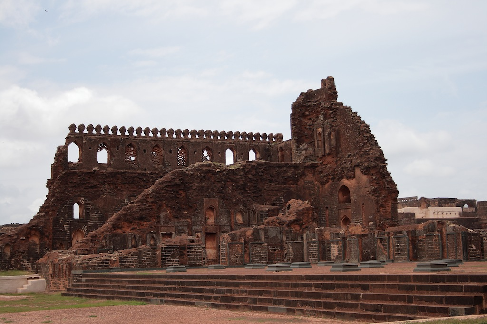
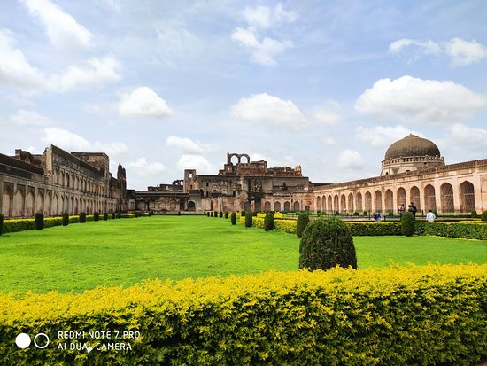

Fort description
Bidar Fort: Amongst the most formidable forts of the country, it is situated in the eastern part of the town and has within it ruins of palaces, mosques and other buildings which had
been built of trap rock. Stone and mortar were used to build the fort-walls. The fort is entered from the south-east by a zigzag passage protected by three gateways. The entrance gate
has a lofty dome, the interior of which had been painted in bright colours.
History of Bidar
Bidar was the capital of Bahmani Kingdom in the 14th century. Thisfort was built by Ahmad Shah Wali Bahman. The Fort was renovated in the 15th century by Sultan
Ahmad Shah-I as he shifted his capital from Kalaburagi (Gulbarga) to Bidar.
What to see in Bidar Fort:
- Islamic and Persian architecture
- Seven main entrances
- 37 bastions (Balcony like structures extending from the fort) of octagonal shape with metal shielded cannons
- Mosques and mahals
-
- Thirty plus Islamic monuments
Visit timings:
Bidar Fort is open daily from 9 AM till 5 PM.
Note:
During summer peak temperatures in Bidar may reach upwards of 40 degree Celsius. Plan your visit with adequate water, an umbrella for cover and sunscreen.
How to reach Bidar:
Bidąr Fort is 700 kms from Bengaluru. Recently opened Bidar Airport is the closest airport (11 kms from Bidąr Fort) which has once a day flight from Bengaluru.
Hyderabad airport is the next best option, 150 kms from Bidar. Bidar city railway station is 3 kms from the Fort. Buses and trains are available from Bengaluru to reach Bidar.
Places to stay near Bidar:
Bidar city has multiple budget and mid range hotels.